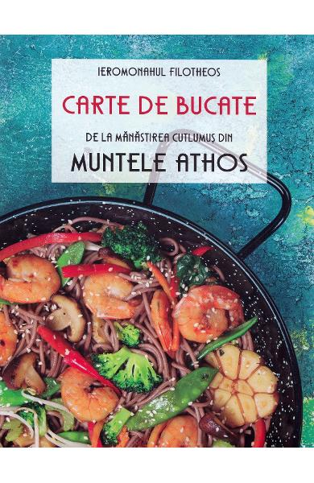

Carte de bucate de la Manastirea Cutlumus din Muntele Athos
Ieromonahul Filotheos
Atunci când avem în inima noastră gânduri frumoase, mâncarea, dincolo de meșteșugul gătitului, are ceva inexplicabil: are harul lui Dumnezeu, devenind într‑adevăr „hrana îngerilor”, iar nu a oamenilor.
De ce are nevoie o mâncare? Întâi de toate, de ingrediente bune, de calitate, deoarece așa arăți că‑ți iubești fratele și îi oferi ce este mai bun, după porunca Domnului: „Iubește‑l pe aproapele tău ca pe tine însuți!” În felul acesta, te respecți și pe tine.
Apoi, sunt necesare o inimă curată și rugăciunea continuă. Fiecare mișcare în actul de gătit să fie însoțită de rugăciunea: „Doamne Iisuse Hristoase, miluiește‑mă!” sau de rugăciunea: „Preasfântă Născătoare de Dumnezeu, miluiește‑ne pe noi!”
Acestea sunt „secretele” pentru succesul în bucătărie și așa, întru ascultare, coboară binecuvântarea Domnului. Când veți încerca să gătiți plini de asemenea gânduri, cu talantul dăruit de Dumnezeu, să fiți siguri că Dumnezeu vă va răsplăti.